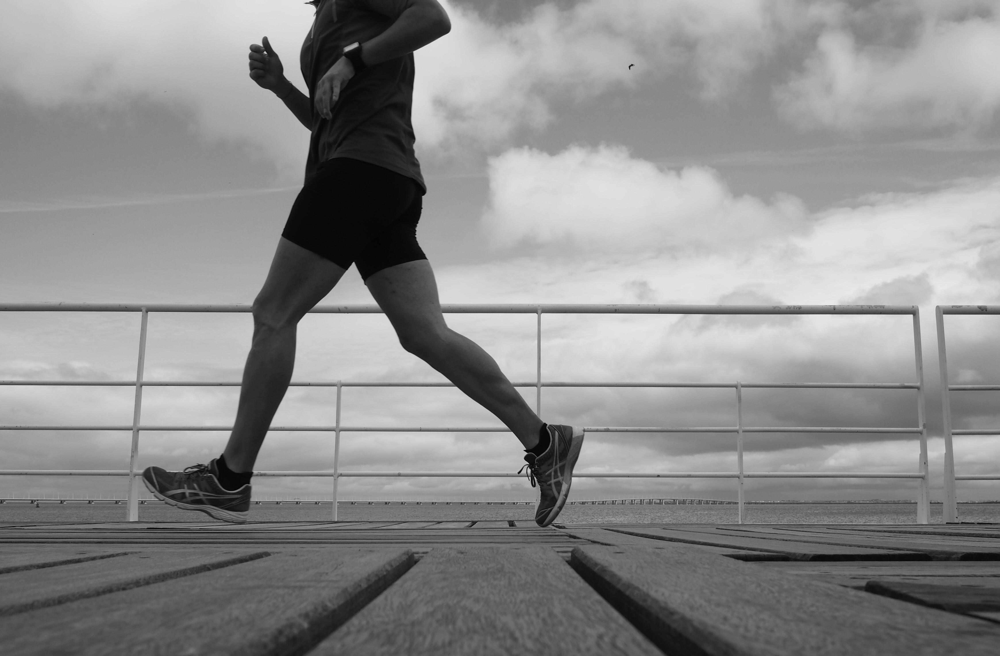

Miksi aloittaa juokseminen?

Juoksemisen on kerrottu parantavan jopa 10 % omaa oppimistehokuutta, ja se onkin paras liikuntamuoto oman oppimisen kannalta. Juoksemisessa paranee myös oma yleiskunto, lihakset ja luut vahvistuvat, sydän-ja verenkiertoelimistön toiminta kehittyy ja hapenottokyky paranee. Juokseminen on myös siitä kiva harrastus, että siinä huomaa nopeasti tuloksia ja se rauhoittaa omaa mieltä ja lisää tasapainoisuutta elämään.
Miten aloittaa juokseminen?
Juoksemisen aloittamisessa pitää olla varovainen. Alussa ei saa lähteä juoksemaan liian pitkiä lenkkejä, koska jalkojen lihasten on totuteltava ensin juoksun aiheuttamaan rasitukseen. Myös lepopäivän pitäminen on tärkeää. Syömisestä ei alussa tarvitse välittää paljoa, kunhan muistaa välttää ennen lenkkiä liikaa epäterveellisen ruuan syömistä. Juodakaan ei saa liikaa, ehkä muutama desilitra puolta tuntia ennen lenkkiä ja syömisessäkin pitäisi yrittää pitää n. puolentoistatunnin tauko, jotta ruoka ehtii sulaa kunnolla. Aluksi käytännössä kaikki lenkkikengät käyvät, mutta myöhemmin niihin kannattaa panostaa. Tästä kuitenkin lisää sivulla muuta huomioitavaa.